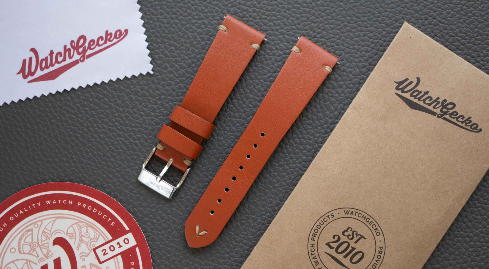
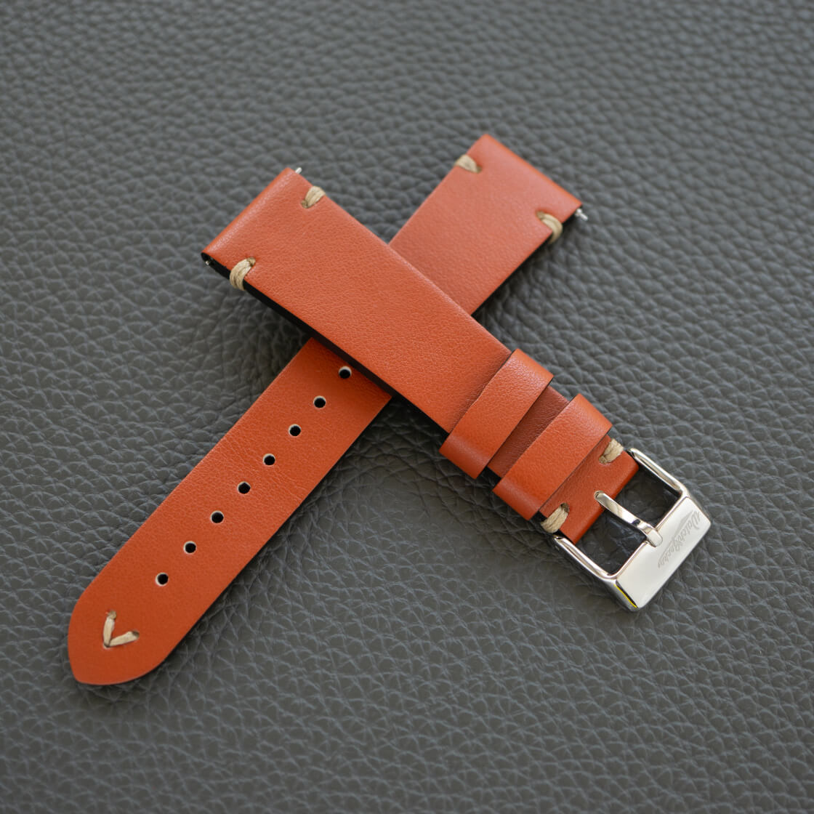
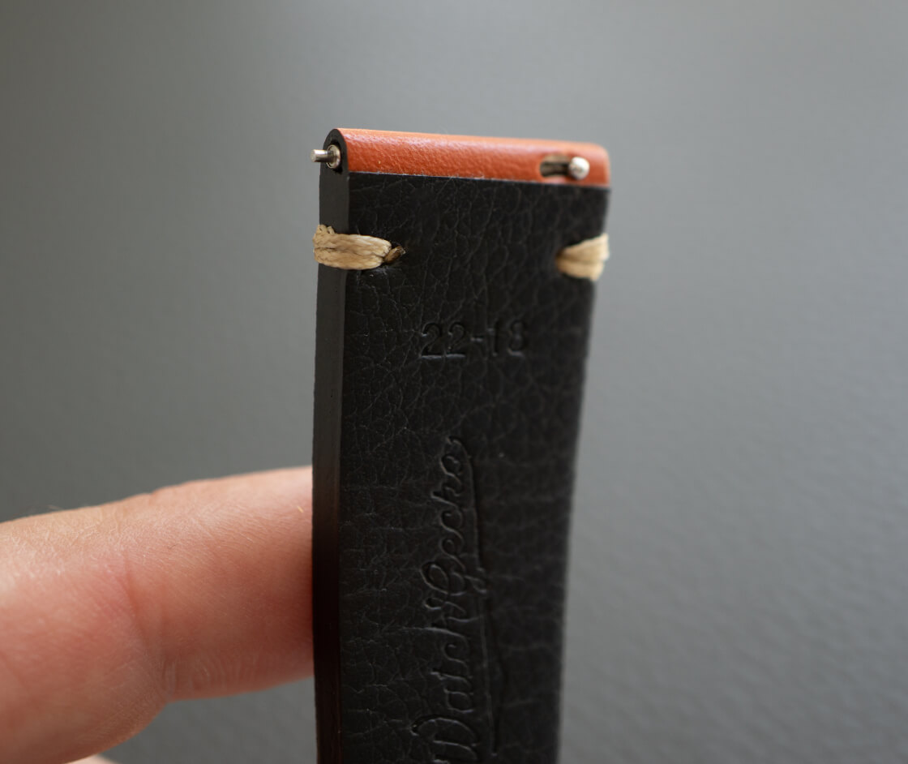
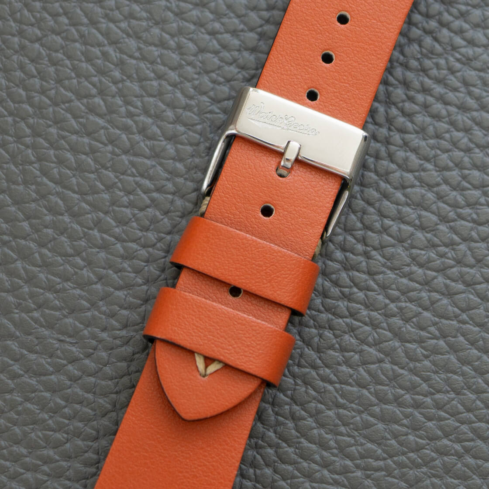
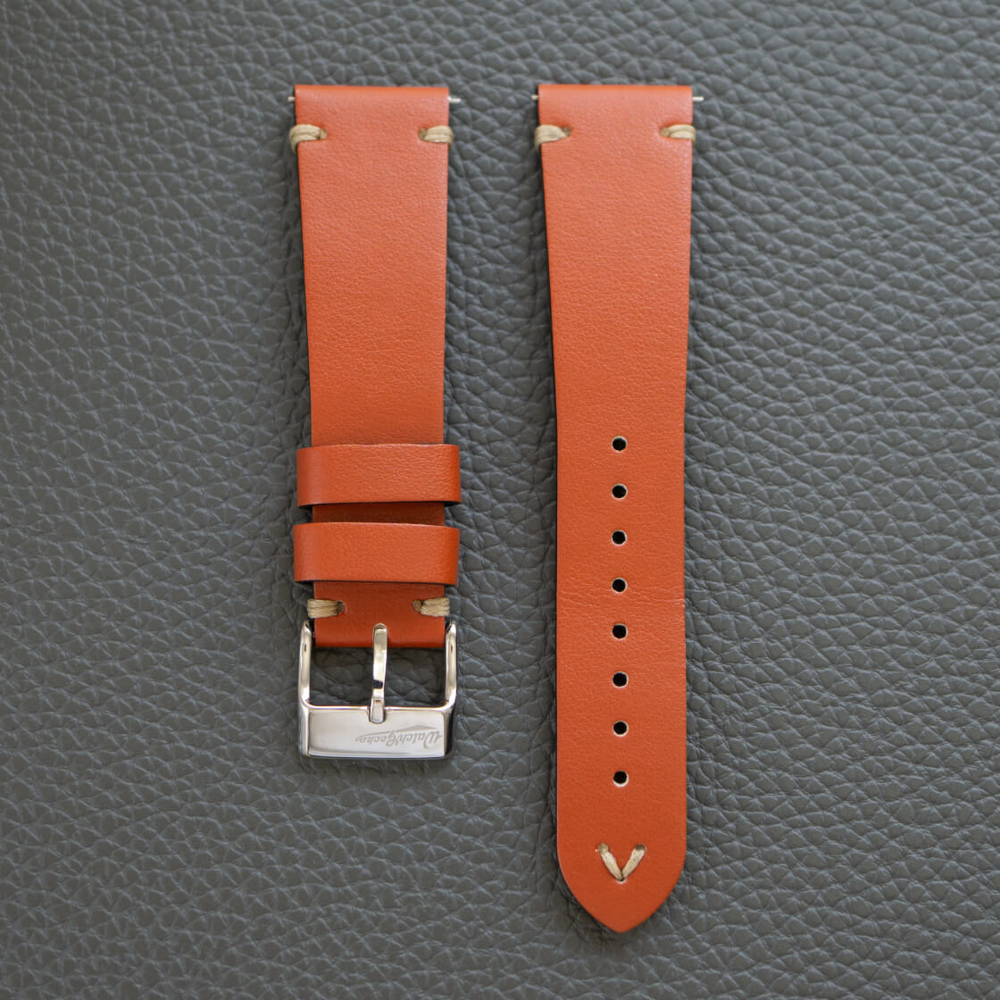
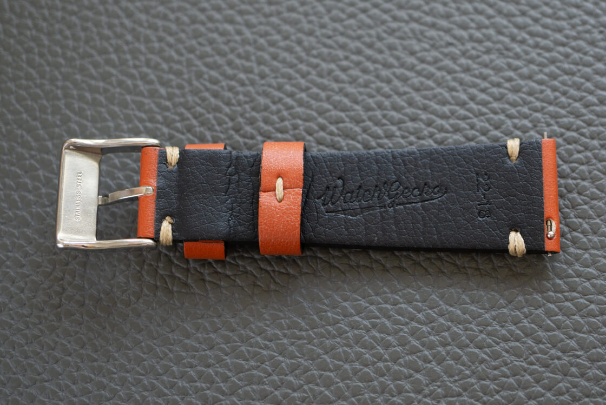
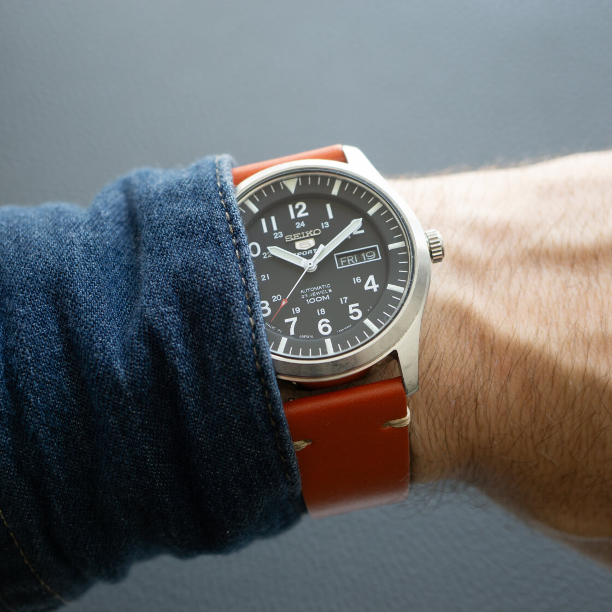

Review of the V-Stitch Vegan Leather Strap by WatchGecko
I have always been a fan of leather watch straps, but recently I have been making a conscious effort to try more sustainable options. So when I got my hands on this WatchGecko strap made from Italian vegan leather, I was eager to see how it measured up. Let me tell you, I was pleasantly surprised by how nice it feels.
 Nenad Pantelic • May 20, 2024
Nenad Pantelic • May 20, 2024

| Quality | |
| Comfort | |
| Design | |
| Durability |
The verdict: This strap hits the sweet spot between being well-built, durable, and comfy. It's not perfect, but it's one of the top animal-free and vegan straps out there.
What we like?
- Quality construction
- No break-in period required
- Great price
- More pronounced tapering
- Quick-release spring bars
- Signed buckle
What we don't like?
- Above the average thickness
- Only comes with a polished buckle
Full review
In the process of learning about animal-free products, I did a bit of research to see how the material is created. I wanted to know if this was a "fake leather" made from plastics or if something else was involved.
WatchGecko sources the material for these vegan straps from the EU, where an Italian manufacturer creates an eco-friendly product made from apple industry waste. Yeah, apples 😲
The base material is formed by drying leftover material from the juicing process, such as peels, cores, and pulp, into a type of canvas. This canvas can be fashioned with a grain texture to replicate traditional leather or given a smooth feel to mimic high-end, soft leather.
I didn't expect that at all. When I hold the strap in my hand, I can't tell that it's made from apple leftovers. It really looks like a leather strap.
Before I jump into describing its construction and design, here is a table with the specifications.
Technical details
| Brand | WatchGecko |
| Width | 22mm |
| Thickness | 3.5mm |
| Tapering | 4mm |
| Length | 120mm + 80mm |
| Material | Vegan leather |
| Construction | Minimal stitch; Side-stitch |
| Color | Redwood brown |
| Finishing | Smooth |
| Buckle | Polished stainless steel |
| Spring bars | Integrated quick-release spring bars |
Apart from brown, this vegan strap also comes in black, navy, and green. It is a thickly padded strap of 3.5mm with neat off-white stitching.
The strap is offered in 20mm or 22mm widths.
Company and ordering
Watchgecko is a really popular place to buy watch straps. They have all kinds of straps - leather, nylon, rubber, metal...
Plus, they innovate all the time. They introduce new product lines, experiment with materials, and strap designs. Never sleeping on their laurels. Much respect!
Shopping on their website is super easy, and they have great customer service, so you can relax and enjoy buying from them. If you are buying from them for the first time, then you can get a promo code for 10% discount if you subscribe to their newsletter.
Design and Materials
This V-Stitch strap is made from a really nice Italian vegan leather, and I have to say, it feels surprisingly supple and smooth. The redwood brown color is rich and warm, and the off-white minimalist stitch adds a nice visual detail. I love how they uses a thicker thread, to match the proportions of the strap.



The strap is 22mm wide at the lugs, and it tapers down by 4mm towards the buckle.
It is about 3.5mm thick which gives it some substance. I would describe the strap's construction as having three layers:
- First, there is the top layer of vegan leather.
- Next, there is a thicker middle layer that gives the strap its body.
- Finally, there is a leather underlayer, which is the part of the strap that comes into contact with a wrist.
I like that it has one fixed and one free keeper. The floating keeper makes it easy to manage the tail end of the strap.
The buckle is made from polished stainless steel. It fits the design, but I would personally love to have the option of a brushed finish as well. The buckle is signed with the WatchGecko logo.
Edges of the strap are neatly finished, and there are also integrated quick-release spring bars.
So much to like here.
Comfort and Durability
The strap is well-made. Clean, tidy, and solid. I can tell that WatchGecko didn't cut any corners in its construction. It feels sturdy and high-quality.
Despite being a thicker strap than I am used to, it is surprisingly soft and pliable. This makes it very comfortable to wear, and it conforms to the shape of my wrist without any stiffness or awkwardness.




I especially appreciate the taper from 22mm to 18mm. This small detail makes a big difference in how the strap wears, because it eliminates any chunky or bulky feeling around the buckle.
In terms of durability, everything looks great so far. The stitching is holding up nicely, and there are no signs of fraying or wear. The cushiony mid-layer has compressed a bit in some areas where the strap bends the most, but this is to be expected with any padded strap and doesn't affect the overall performance.
If used in rotation with other straps I am sure this one will last for a long time.
Initial Usage At first sight, the strap appears quite thick, but it is actually very pliable and bendable. It is quite comfortable to wear. I don't feel any stiffness around the lugs, and the strap curves and conforms nicely around my wrist.
After Four Months (of occasional use): The thicker, cushiony mid-layer has started to compress a bit. I can see areas with small indents and creases. Other than that, the strap is still comfortable and shows no significant tears or damage.
Compatibility and Pairing Recommendation
I have had a lot of fun trying it out on different watches from my collection. Leather on a diver? Why not, I am mostly desk diving after all. It is a natural with sporty watches, but I think it can be dressed up or down.
One note about matching this strap: it is useful to consider the proportions of your watch. Because of the strap's thickness and robust stitching, it tends to make a bold statement. Watches with smaller lugs or delicate dials might get overshadowed. This strap really looks the best when paired with watches that have a bit more presence on the wrist – think larger cases, bolder numerals, and prominent hands.

Where to Buy?
Unfortunately, I checked, and it looks like this strap has been discontinued. I am confident that Watchgecko will have something similar soon in their offerings.
Check here to see the available vegan leather straps they have at the moment.
Looking Ahead
I have to say I went into this review a bit skeptical. But this experience has definitely opened my eyes to the possibilities of vegan alternatives, and I will be keeping a close eye on these types of watch straps in the future.
Kudos to WatchGecko for their commitment to sustainability. It is clear that green initiatives are more than just a trend, and it is exciting to see brands like WatchGecko (and ZULUDIVER for that matter) leading the charge.
Even Apple has decided stop sourcing and selling leather cases and accessories from their latest products. This signals a real shift in consumer consciousness, and I think we will see vegan options become even more prevalent in the years to come.